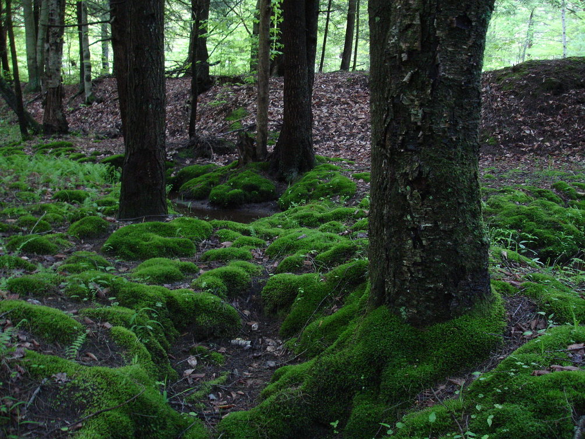
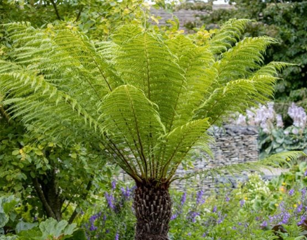

Understanding the role of plants in our world
Plants might seem simple, but they are one of the most important parts of life on Earth. Every day, we depend on plants without even realizing it. They provide air, food, materials we use in daily life. In this blog, you will know why plants are so important and introduce two major types of plants.
Oxygen Production: Plants release oxygen by photosynthesis. This process is important because most living organisms need oxygen to survive.
Food Source: Plants are the primary source of food for all living things. Even animals that only eat meat need plants, as the meat they eat gets its food from plants.
Habitat for Animals: Some animals need plants for shelter. For example, squirrels live in trees and some insects hide in plants to keep themselves safe from animals that will eat them.
Climate Regulation: Plants help control the climate by taking in carbon dioxide and releasing oxygen.
Scientific Name: Bryophyta
Description: Mosses are small plants that grow in clusters and stay close to the ground. Unlike most plants, they do not have roots, stems, or leaves. Instead, they absorb water directly from their surroundings.
Habitat: Moss is usually found in moist, shaded areas such as forest floors, rocks, and near streams.

Scientific Name: Pteridophyta
Description: Ferns are plants with long divided leaves called fronds. They do not produce flowers or seeds and instead reproduce using spores.
Habitat: Ferns grow best in damp, shaded environments, especially in forests and areas with high humidity.

Plants do so much for the world, like providing us with oxygen. Learning about different kinds of plants, like mosses and ferns, helps us appreciate how different and interesting plant life is. Taking care of plants is important because plants are essential for human, animal, and environmental survival.